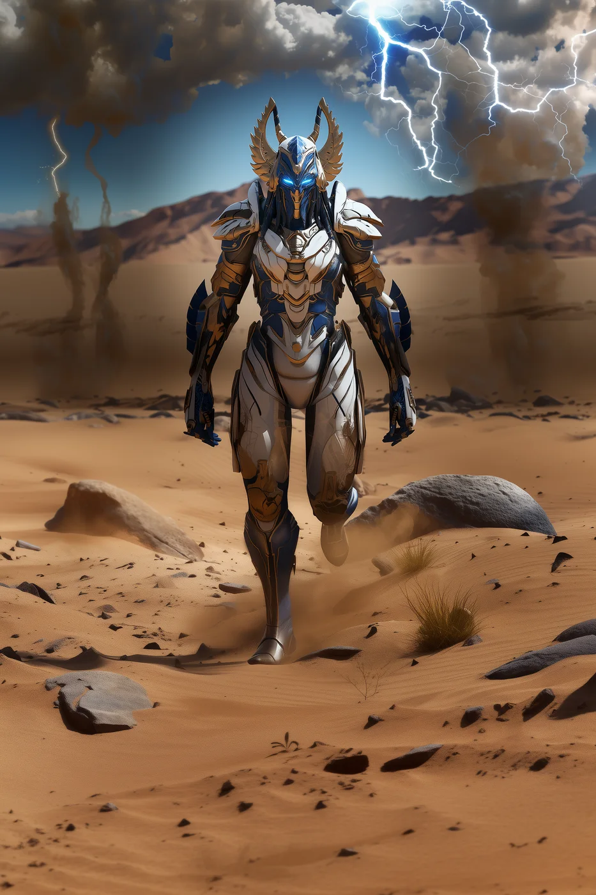

©
©

Tharven
Eternal Custodian · Elite
Tharven watches for paradoxes the way sailors watch for storms. The Chronal Snare bends the moments between frames and wears down every enemy at once. The Custodians say Tharven once saw the same Synthbot arrive twice. Tharven refuses to talk about it.